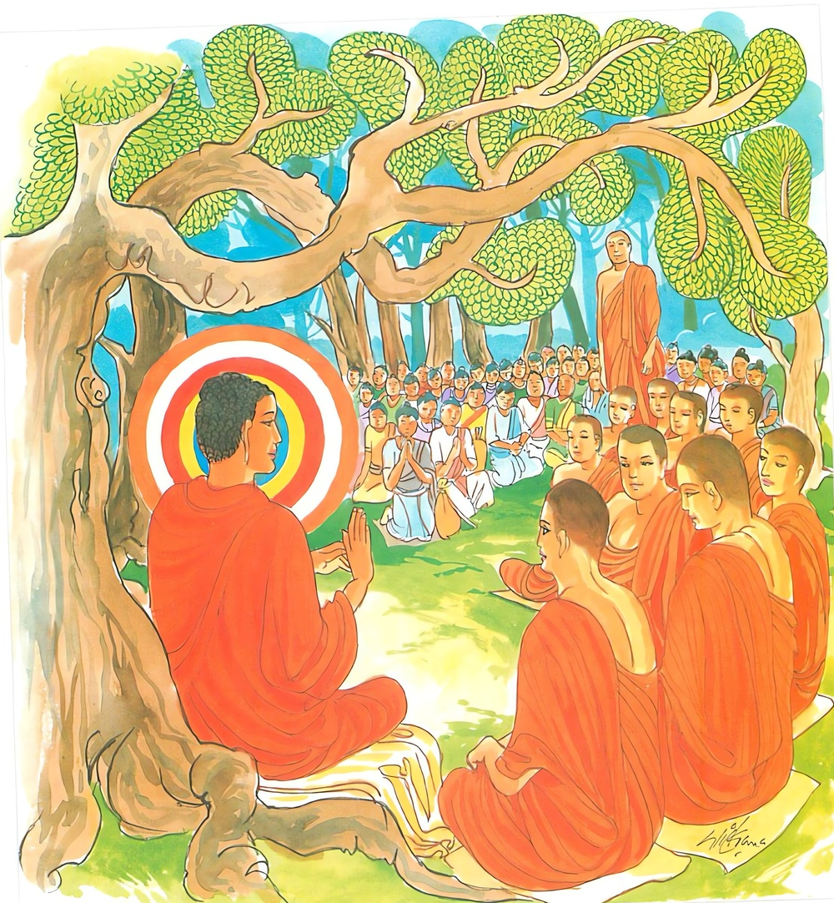

16-7 මූණ බලා පිදූ කැවුම්
මෙම කතාව ධම්මපද අටුවාවෙන් ද කියවන්න.
සීලදස්සනසම්පන්නං ධම්මට්ඨං සච්චවෙදිනං
අත්තනො කම්ම කුබ්බානං තං ජනො කුරුතෙ පියං.
සිවු පිරිසිදු ශීලයෙන් ද මාර්ගඵල සම්ප්රයුක්ත සම්යග්දෘෂ්ටියෙන් ද යුක්ත වූ ලොවුතුරා දහම් හි පිහිටි සිවුසස් දත්තාවූ, (තුන් සික පිරීම වූ) තමාගේ කාර්ය්යය කරණ ඒ රහත්හු ලොවී මහජන තෙම ප්රිය කරන්නේ ය.

එක් දවසක් බුදුරජානන් වහන්සේ අසූ මහාශ්රාවකයන් ප්රධාන කොට ඇති පන්සියයක් භික්ෂූන් පිරිවර කොට ඇති සේක් රජගහ නුවරට පිඩු පිණිස වැඩියාහුය. උත්සව දවසක් වූ එදා උන්වහන්සේ කැවුම් පැස් කරපිට ගන්වා ගෙණ නුවරින් නික්ම උයනට යන තරුණයන් පන්සියයක් දුටුසේක. ඔවුහු ද බුදු රජුන් දැක වැඳ නික්ම ගියහ. එක් භික්ෂු නමක්හටත් කැවුමක් පිළිගණු මැනැවැයි නො ද කීහ. බුදුරජානන් වහන්සේ උන් එතැනින් ගිය වේලෙහි “මහණෙනි! කැවුම් වළඳහු දැ” යි භික්ෂූන් ගෙන් ඇසූහ. භික්ෂූන් “වළඳනට කැවුම් කොහි දැ” යි අසා සිටි කල්හි “කැවුම් පැස් කරපිට ගන්වා ගෙන යන තරුණයන් කීම නො දුටුවහු?” යි විචාළ සේක. “ස්වාමිනි! මෙබඳු ගැටවරයෝ කවරක්හට නම් කැවුම් දෙත් දැ” යි කී කල්හි “මහණෙනි! ඔවුන් මමත් තොපත් කැවුම්වලින් නො ද පැවරූහ, එහෙත් මහණෙනි! කැවුම් අයිතිකරුවෝ භික්ෂූන් පස්සේ එන්නාහ, කැවුම් වළඳා ම යන්නට ඕනෑ ය” යි වදාළ සේක. බුදුවරුනට වනාහි එක් පුද්ගලයකු කෙරෙහි හෝ ඊර්ෂ්යාවක් චිත්තප්රදෝෂයෙක් නැත. එහෙයින් මෙසේ වදාරා භික්ෂූන් හැර ගෙණ රුක්මුලෙක සෙවනෙහි වැඩ හුන්සේක.
ඒ තරුණයෝ ද පස්සේ වඩනා මහසුප් මහතෙරුන් දැක උපන් සෙනහ ඇත්තෝ ප්රීතිවේගයෙන් පිරිපුන් සිරුරු ඇත්තාහු පැස් බහා තබා පසඟ පිහිටුවා තෙරුන් වැඳ කැවුම් පැස් පිටින් ම ඔසවා ගෙණ “ස්වාමීනි! කැවුම් පිළිගත මැනැවැ” යි තෙරුන් ඇයද සිටියහ. එකල්හි උන්වහන්සේ “මේ අපගේ තිලෝගුරු බුදුරජානන් වහන්සේ භික්ෂුසඞ්ඝයාත් සමග රුක්මුල්හි වැඩ හිඳිනා සේක, එහෙයින් තමුසේලාගේ ඔය කැවුම් පැස් ගෙණ ගොස් භික්ෂුඞ්ඝයාට බෙදා පිළිගන්වාලවු” යි කීහ. ඔවුහු “ස්වාමීනි! යහපතැ” යි ආපසු හැරී තෙරුන් සමග ම ගොස් කැවුම් පිළි ගන්වා කැවුම් වළඳනා සැටි බලමින් එකත් පස්ව සිට වළඳා අවසන්හි පැන් පිළිගැන්නූහ. එකල්හි ඇතැම් භික්ෂූන් වහන්සේ “බලනු මැනැවි, මොවුහු මූණ බලා කැවුම් දුන්හ, බුදුරජුන්ට වේවයි, අසූමහාසව්වන්ට වේවයි, කැවුම් වළඳන්නට නො ද පිළිගන්වා මහසුප් මහතෙරුන් දැක උන්වහන්සේට පැස් පිටින් ම ගෙණවුත් දුන්හ, උන්වහන්සේගේ නියමයෙන් බුදුරජුන්ට හා අනෙක් දෙනා වහන්සේටත් කැවුම් ලැබිනැ” යි අවමන් කළහ.
බුදුරජානන් වහන්සේ ඒ භික්ෂූන්ගේ මේ කතාව අසා “මහණෙනි! මපුත් මහසුප් වැන්නෝ දෙවිමිනිසුනට ප්රිය වෙත්. දෙව්මිනිස්සු ඔවුන්ගේ මහත් ගුණයෙහි පැහැද මහත් ගුණය ම සලකා ඔවුනට සිවු පසය පුදති” යි වදාරා මේ ධර්මදේශනාව කළ සේක.
සීලදස්සනසම්පන්නං ධම්මට්ඨං සච්චවෙදිනං,
අත්තනො කම්මකුබ්බානං තංජනො කුරුතෙ පියන්ති.
ශීලයෙන් හා ප්රඥායෙන් යුක්ත වූ ධර්මයෙහි පිහිටියා වූ සත්යය දන්නා වූ තමාගේ කටයුතු කරන්නා වූ ඒ පුද්ගලයා, ජන තෙමේ ප්රිය කෙරෙයි.
සීලදස්සනසම්පන්නං = ශීලයෙන් හා ප්රඥායෙන් යුක්ත වූ.
මෙහි ශීල නම්: ප්රාතිමෝක්ෂසංවර - ඉන්ද්රියසංවර - ආජීවපාරිශුද්ධි - ප්රත්යයසන්නිශ්රිත යන සිවු පිරිසිදු සිල් ය. [1] ශීලශබ්දය හා සමස්ත ව සිටි දස්සන ශබ්දයෙන් කියවෙනුයේ මාර්ගඵලසම්ප්රයුක්ත වූ සම්යක්දෘෂ්ටි චෛතසික ය යි. එය මෙහි චතුර්දශතරඞ්ගයෙහි එන සම්මාදිට්ඨිකථායෙහි කියා ඇත.
ධම්මට්ඨං = ධර්මයෙහි පිහිටියා වූ.
ධම්මට්ඨ නම්: ධර්මයෙහි පිහිටියේ ය. නවලෝකෝත්තරධර්මය ප්රත්යක්ෂ කෙළේ ය.
සච්චවෙදිනං = සත්යය දන්නා වූ.
චතුරාර්ය්යසත්යය සොළොස් අයුරකින් දැන සිටියේ සච්චවෙදී නම්. ස්රෝතාපත්තිමාර්ගඥානය නිවන අරමුණු කොට සිටියේ, දුඃඛසත්යය වෙන් වෙන් කොට දැනීම - සමුදය සත්යය දුරුකිරීම නිරෝධසත්යය ප්රත්යක්ෂකිරීම - මාර්ගසත්යය වැඩීම යන කෘත්ය සතර එක්වට ම සිදු කරන්නේ ය. සකෘදාගාමී මාර්ගඥානාදී වූ මාර්ගඥාන තුන ද මේ කෘත්ය සතර මෙසේ ම සිදු කරණ බැවින් සත්යවේදීභාවය සොළොස් අයුරකින් වන්නේය, යි වදාළ සේක. එක් ම මාර්ගඥානයෙකින් එකක්ෂණයෙහි මේ කෘත්ය සතර සිදු වන්නේ, ප්රදීපයන් පෙරපසු නො ව එක්වට ම පහන්වැටිය දැවීම - අඳුරුනැසීම - ආලෝකය පැතිරවීම - තෙල්ගෙවීයෑම යන කෘත්ය සතර සිදු කරන්නා සේ ය. පිළිවෙළින් පහළ වන ලෝකෝත්තර මාර්ගඥාන චතුෂ්කය, පහළ වූ ඒ ප්රථම - ද්විතීය - තෘතීය - තුරීය අවස්ථාවන්හි මෙකී කෘත්ය සතර සිදු කරන්නේ ය. එක් එක් මාර්ග ඥානය පහළවන අවස්ථායෙහි නිවන අරමුණු කොට පහළ වනුයේ චතුස්සත්යධර්මයන් පරිඥානාධිගමය ප්රහාණාධිගමය සාක්ෂත් ක්රියාධිගමය භාවනාධිගමය යන චතුර්විධ අධිගමය සිදු කරමින් ම පහළ වනුයේ ය.
අත්තනො කම්මකුබ්බානං = තමාගේ කටයුතු කරන්නා වූ.
මෙහි තමන්ගේ කටයුතුය, යි වදාළේ ශීල-සමාධි-ප්රඥා සඞ්ඛ්යාත ශික්ෂාත්රය යි. “අත්තනො කම්මං නාම තිස්සො සික්ඛා” යනු අටුවා. මෙ කී ශික්ෂාත්රය පුරණුයේ තමාගේ කටයුතු කරන්නේ නම. [2]
තං ජනො කුරුතෙ පියං = ඒ පුද්ගලයා ජන තෙමේ ප්රිය කෙරෙයි.
සිලදස්සනසම්පන්නං - ධම්මට්ඨං - සච්චවෙදිනං - කම්මකුබ්බානං යන මෙ කී පද සතර සිටියේ තං යනු වෙසෙසාය. මෙ කී පදයන්ගෙන් කියන අරුත් රඳා සිටියේ සාමාන්ය ජීවිතයක් ඇත්තකු කෙරෙහි නො වේ. විශිෂ්ට ජීවිත ඇත්තකු කෙරෙහි ම ය. ඒ විශිෂ්ටයා නම් ලොවට පින් කෙත් වූ රහතුන් වහන්සේය. කරුණු දත් ලෝකීය මහාජන තෙමේ ප්රිය කරන්නේ රහතුන් වහන්සේට ය. රහතුන් වහන්සේ ම ලෝකීය මහාජනයාට ප්රිය වෙති. උන්වහන්සේ නැති තැන, ආත්මාලය හැර සසුන් පිළිවෙත දිවිමෙන් රක්නා සිල්වත් තෙමේ ම ප්රිය වේ. තමන්ගේ වැඩ කටයුතු සලසා දෙන තමාගේ වැඩට රුකුල් දෙන දුශ්ශීලයාත් දුශ්ශීලයාගෙන් එසේ වැඩ කටයුතු සිදුකර ගන්නා වූ දුශ්ශීල වූ වංචනික වූ ඇතැම් දෙනාට ප්රිය වේ. ඒ දෙදෙන ම ගුණ නසන්නෝ වෙති. දුසිල් පැවිද්දා දුසිල් ගිහියා නසන්නේ ය. දුසිල් ගිහියා දුසිල් පැවිද්දා නසන්නේ ය. ඔවුහු මෙහි නො ගැණෙති. අජාසත් රජුට දෙව්දත් ප්රිය විය. දෙව්දත්හට අජාසත් රජ ප්රිය විය. දෙදෙන ම ගුණයෙන් නැසුනාහ. විඥ වූ ලෝකීය ජන තෙමේ රහතුන් වහන්සේටත් රහතුන් වහන්සේ ගිය මග යන්නවුන්ටත් හැමදා පුද සැලකිලි දක්වනු කැමැත්තේය.
ධර්මදේශනාවගේ අවසානයෙහි ඒ සියලු තරුණයෝ සෝවන් ඵලයෙහි පිහිටියාහු ය.
පංචශතදාරක වස්තුව නිමි.